About Us
关于百年春
体检单上全是箭头，甘油三酯高出正常值5倍！”回忆起几个月前的报告，梁先生仍心有余悸。他知道，高血脂是血管里的“定时炸弹”，但传统的生活方式干预对他这样忙于应酬的商务人士来说，见效缓慢。
然而，就在短短一个多月后，他的复查结果却让医生也感到惊讶：甘油三酯从9.33降至3.75，总胆固醇从5.42降至2.65，其余指标也全部回归正常范围。 这一切，得益于他在广州百年春自体干细胞进行的一次健康管理尝试——自体造血干细胞干预。
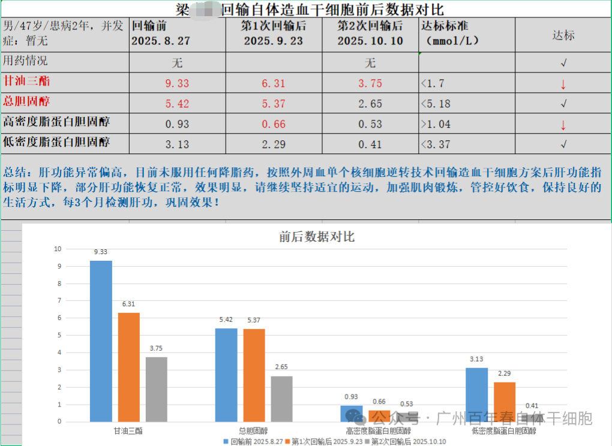
2025年8月26日 · 初诊
梁先生的体检报告清晰地标出了他的健康危机：
· 甘油三酯：9.33 mmol/L（严重超标）
· 总胆固醇：5.42 mmol/L（偏高）
· 高密度脂蛋白（“好”胆固醇）： 偏低
诊断结论：血脂代谢异常，心血管疾病风险高。
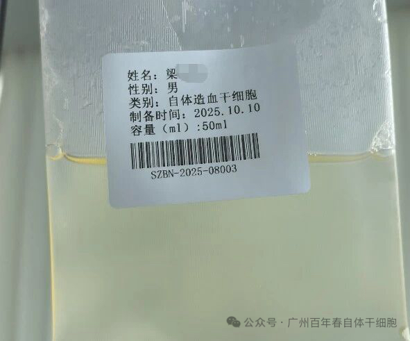
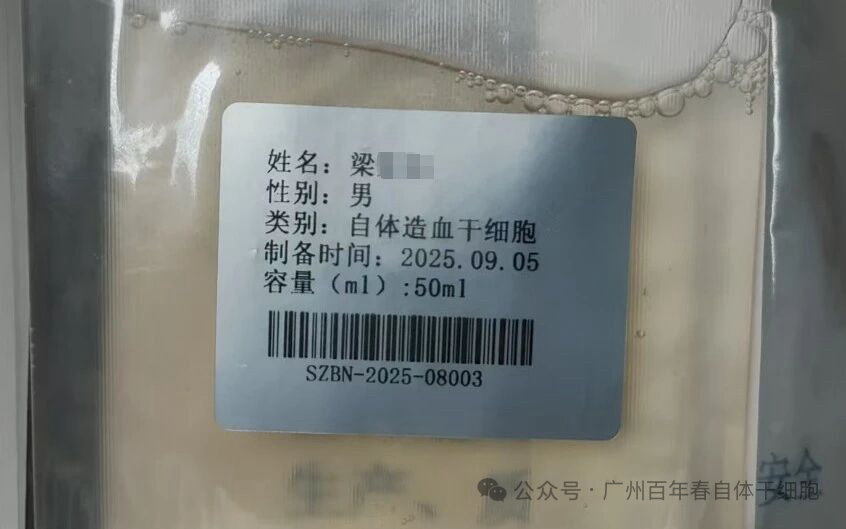
2025年9月5日 · 首次干预
专家团队为他制定了严谨的方案。在采集自身血液制备干细胞后，梁先生首次回输了2.19亿个自体造血干细胞。
2025年10月10日 · 成果验收
在完成第二次细胞回输的同期复查中，结果令人振奋：
不仅血脂指标大幅改善，连尿酸也恢复了正常。
总胆固醇、低密度脂蛋白等关键指标均降至理想水平。
这份“逆袭”的体检报告，标志着梁先生的身体内部完成了一场积极的“代谢系统修复”。
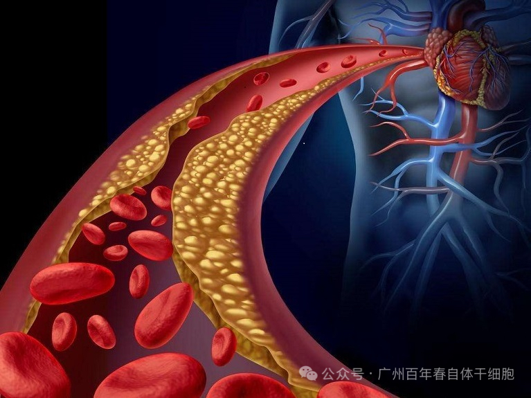
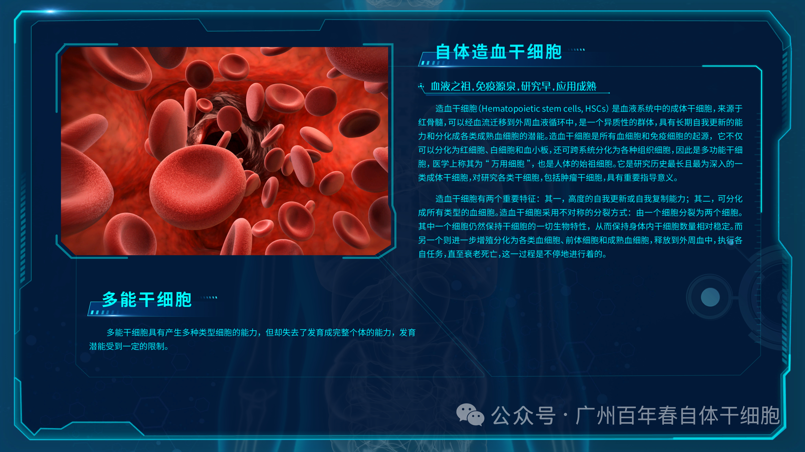
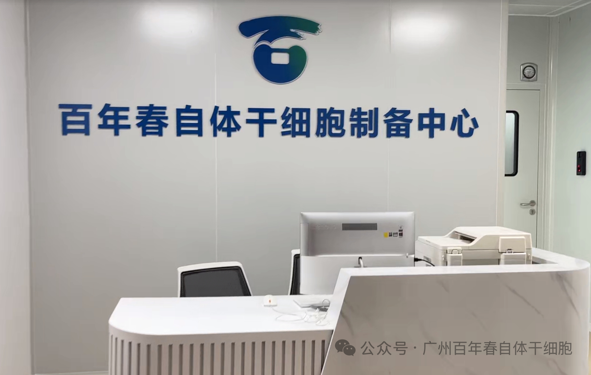
广州自体造血干细胞，其核心逻辑在于修复与重启 。
传统降脂药像是外援，帮助处理血液中多余的脂质；而自体干细胞则更像是派出一支精准的 内部维修队 。这支队伍来源于自身，没有排异反应，其潜在作用可能包括：
1. 修复血管内皮： 受损的血管内皮是脂质沉积的起点。自体干细胞帮助修复这些损伤，从源头减少“垃圾”堆积。
2. 调节肝脏代谢： 肝脏是血脂代谢的核心工厂。自体干细胞改善肝脏功能，使其更有效地处理甘油三酯和胆固醇。
3. 调节免疫炎症： 高血脂往往伴随慢性炎症。自体干细胞通过免疫调节，减轻血管内的炎症环境，从而稳定血脂。
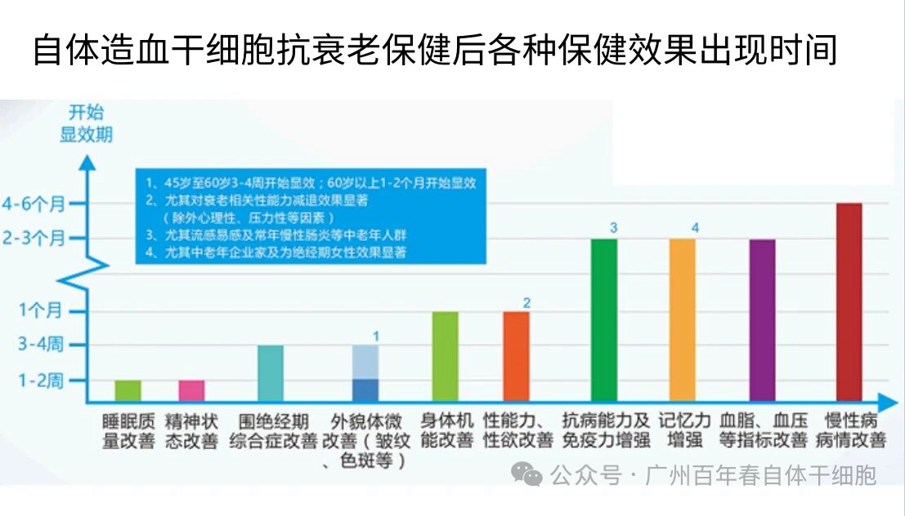
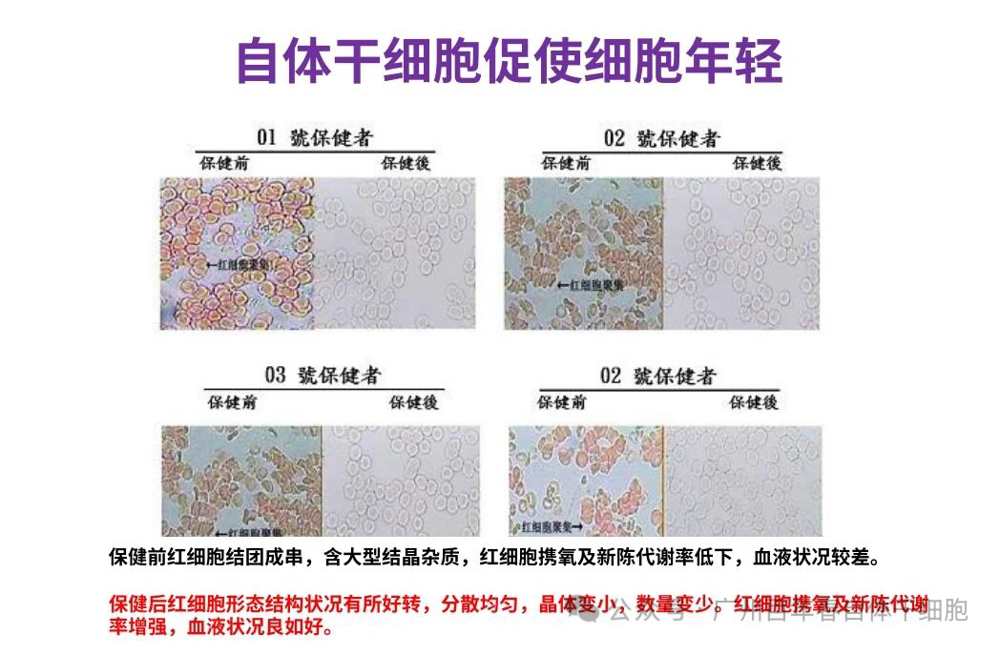
0１
我们百年春是国家高新技术企业，专注非转基因自体干细胞研发23年。团队由36位专家组成，核心领军人物林雄斌博士从2002年就开始推动自体干细胞的技术转化，坚持“学术研究+临床实践+产业化”三位一体。 在今年，也就是2025年，我们与中科院先进研究院签订了干细胞创新联合体团队，这也是中科院签订的广东省第一家干细胞合作机构，这次签约也收到了包括人民日报、新华网、凤凰网等在内的主流媒体报道。 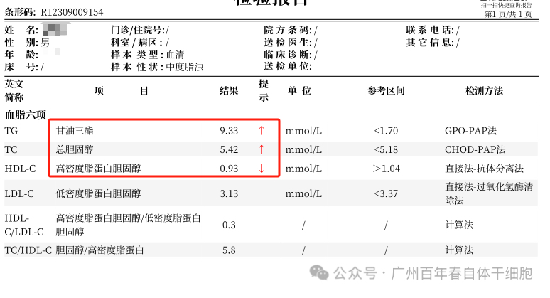 0２

我们拥有的百年春自体干细胞技术生产的系列自体干细胞，颠覆了传统用一种异体干细胞应对所有病症的非靶向缺陷，实现了十余种自体干细胞精准靶向修复（比如针对糖尿病的胰腺干细胞、针对神经损伤的神经干细胞、针对肝硬化的肝脏干细胞……）。
上述种种，最核心点在于，我们掌握了独家专利技术——“小分子诱导性自体干细胞生产制备技术”。这项技术的厉害之处在于：仅需75-150毫升外周血（普通人抽一管血的量），就能在6-12天内一次性生产上亿级的原代自体干细胞，且存活率超过99%！更重要的是，我们通过体细胞逆向诱导（不用病毒载体、不用基因插入），让普通体细胞“返老还童”成干细胞——无转基因、无病毒污染、无致瘤风险，从源头上解决了安全性问题。
No.03
防患于未然：日常生活的“降脂兵法”
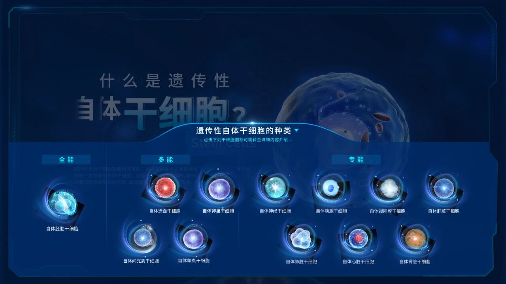
梁先生的案例为我们打开了一扇新窗口，但再先进的技术也不能替代日常预防。守护血脂健康，我们每个人都是自己健康的第一责任人。以下5大实用策略，请务必收好：
· 优选“地中海饮食”： 多吃深海鱼、坚果、橄榄油（富含不饱和脂肪酸）；
· 拥抱膳食纤维： 燕麦、糙米、豆类、绿叶蔬菜是“肠道清道夫”；
· 坚决“三少”： 少油炸、少肥肉、少甜食，特别是戒掉含糖饮料和精致糕点。
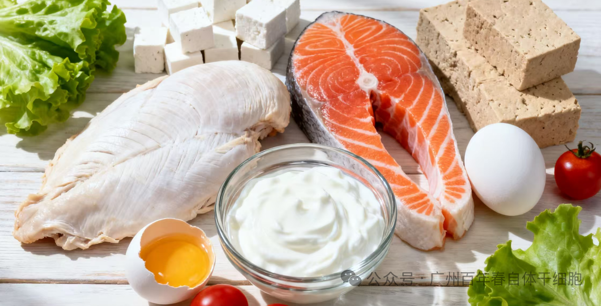
0２
· 有氧运动是关键： 每周坚持150分钟的快走、慢跑或游泳，能直接降低甘油三酯。
· 加入力量训练： 每周2次深蹲、俯卧撑等，增加肌肉量，提升基础代谢。
肥胖，尤其是“将军肚”，是血脂的温床。将体重指数（BMI）控制在24以下，是改善代谢最直观有效的方式之一。
酒精，特别是大量饮用，会在肝脏内直接转化为甘油三酯。严格限酒是降低甘油三酯的最快途径之一。
像梁先生一样，不要害怕体检。定期监测血脂、血糖、尿酸，才能及时发现问题，在身体发出更大警报前采取行动。
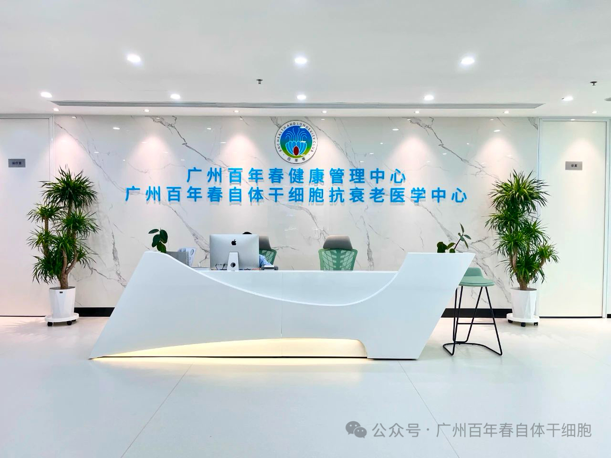
健康管理，正在从对症治疗迈向根源修复的时代。梁先生的经历，为我们展示了一种新的可能性。然而，无论技术如何发展，健康的生活习惯永远是性价比最高、最可靠的“保健药”。
愿我们都能手握科技之钥，同时践行日常之责，守护好自己和家人的血管健康。
上一篇：
下一篇：
年后肝"负重"？百年春护肝美颜能量抗衰老针——给肝"松绑"，让脸发光！
2026-03-01
自体干细胞逆转高血脂，重启健康代谢！
2026-01-12
生殖干细胞
2025-12-10
强直性脊柱炎
2025-12-01
间充质干细胞
2025-11-14